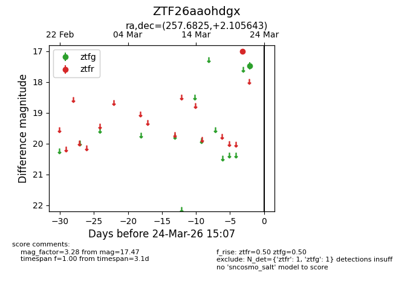
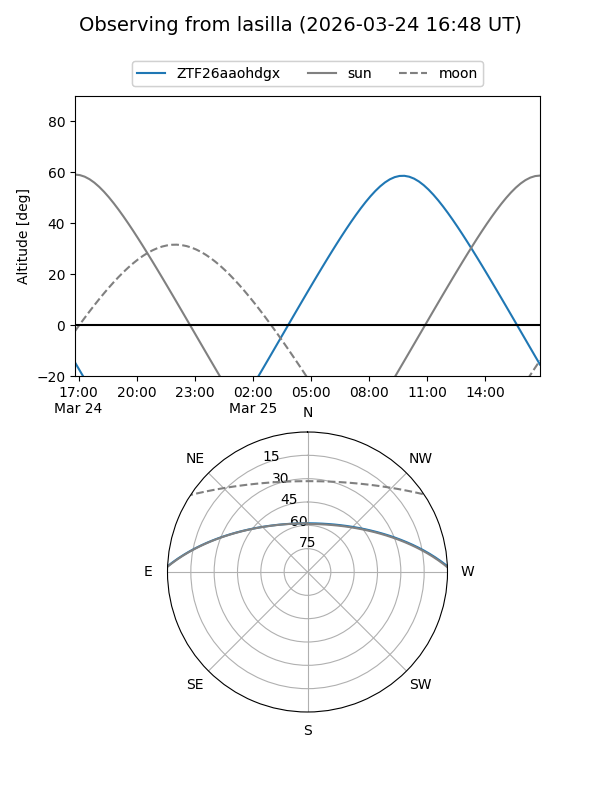
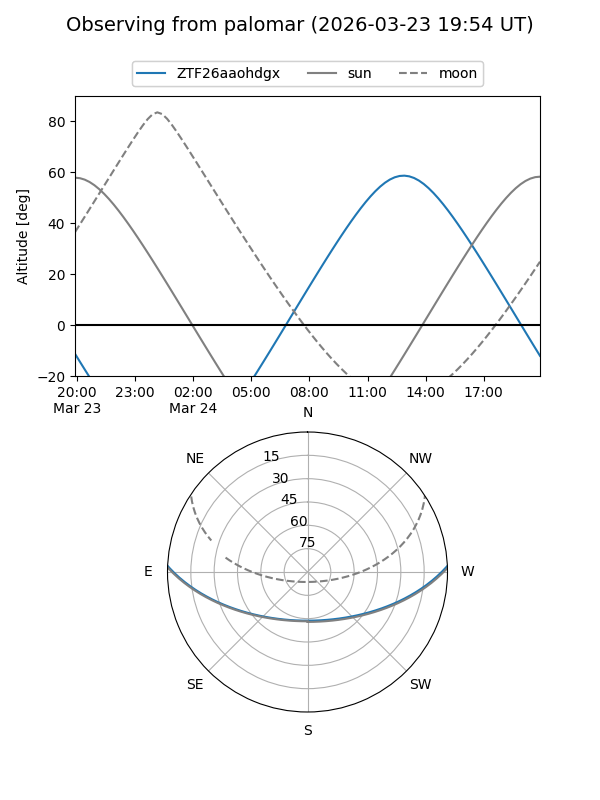

ZTF26aaohdgx
Target ZTF26aaohdgx at 2026-03-24 15:10
Aliases and brokers:
FINK: link
Lasair: link
ALeRCE: link
alt names
ZTF26aaohdgx (ztf,fink_ztf)
Coordinates:
equatorial (ra, dec) = 257.6825,+2.10564
equatorial (HMS+DMS) = 17:10:43.80,+02:06:20.31
galactic (l, b) = (22.8285,+23.27302)
Flags:
Photometry:
last ztfg=17.47, ztfr=17.00
1 ztfg, 1 ztfr detections
Lightcurve

Visibility


Additional plots